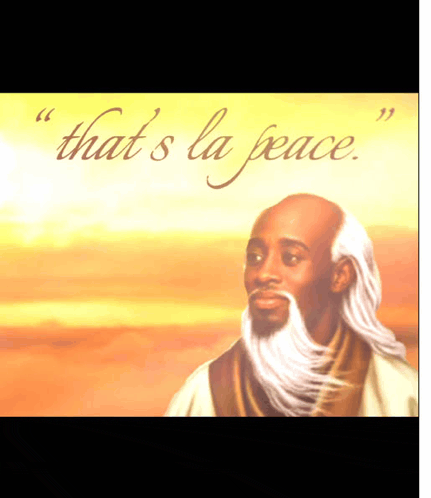

Wikipedi be a free-content online encyclopedia wey community of volunteers, dem know as Wikipedians dey wrep den dey maintain am, thru open collaboration den de wiki software MediaWiki. Wikipedia be de largest den most-read reference work insyd history,[1][2] wey ebe consistently ranked among de ten most visited websites; as of August 2024, na dem rank am fourth by Semrush,[3] den seventh by Similarweb.[4] Ebe founded by Jimmy Wales den Larry Sanger on January 15, 2001, na de Wikimedia Foundation an American nonprofit organization dey host Wikipedia since 2003, funded mainly by donations from readers.[5]